Rosetta store: Generalized Mixed
(Marcello Gallucci)
keywords jamovi, R, SPSS, logistic, generalized mixed, mixed models
GAMLj version ≥ 2.0.0 Draft version, mistakes may be around
Here you can find comparisons of results obtained in jamovi GAMLj, R, and SPSS. When not explicitly discussed, the code of different software is written with the aim of obtaining identical results across programs (not necessarily with the most efficient strategy).
In this example we compare GAMLj results with R results obtained by IDRE on their tutorial web page, and with SPSS results.
The research design
In this example, we are going to explore lung cancer remission using a simulated dataset. A variety of outcomes were collected on patients, who are nested within doctors, who are in turn nested within hospitals. There are also a few doctor level variables, such as Experience, that we will use in our example (IDRE). Data can be downloaded here
R
The researcher is interested in studying the relationships between
cancer remission and both patients and doctors characteristics. The
analyst uses the R glmer command from the
lme4 Package to estimate a mixed effects logistic
regression model with Il6, CRP, and
LengthofStay as patient level continuous predictors,
CancerStage as a patient level categorical predictor (I,
II, III, or IV), Experience as a doctor level continuous
predictor, and a random intercept by DID, doctor ID.
Results
# estimate the model and store results in m
m <- glmer(remission ~ IL6 + CRP + CancerStage + LengthofStay + Experience +
(1 | DID), data = hdp, family = binomial, control = glmerControl(optimizer = "bobyqa"),
nAGQ = 10)
# print the mod results without correlations among fixed effects
print(m, corr = FALSE)
## Generalized linear mixed model fit by maximum likelihood (Adaptive
## Gauss-Hermite Quadrature, nAGQ = 10) [glmerMod]
## Family: binomial ( logit )
## Formula:
## remission ~ IL6 + CRP + CancerStage + LengthofStay + Experience +
## (1 | DID)
## Data: hdp
## AIC BIC logLik deviance df.resid
## 7397 7461 -3690 7379 8516
## Random effects:
## Groups Name Std.Dev.
## DID (Intercept) 2.01
## Number of obs: 8525, groups: DID, 407
## Fixed Effects:
## (Intercept) IL6 CRP CancerStageII
## -2.0527 -0.0568 -0.0215 -0.4139
## CancerStageIII CancerStageIV LengthofStay Experience
## -1.0035 -2.3370 -0.1212 0.1201
The analyst goes on in computing the confidence intervals of the estimates applying the simple formula \(\theta \pm 1.96 \cdot SE_{\theta}\).
se <- sqrt(diag(vcov(m)))
# table of estimates with 95% CI
(tab <- cbind(Est = fixef(m), LL = fixef(m) - 1.96 * se, UL = fixef(m) + 1.96 *se))## Est LL UL
## (Intercept) -2.05269 -3.09435 -1.011025
## IL6 -0.05677 -0.07935 -0.034196
## CRP -0.02148 -0.04151 -0.001455
## CancerStageII -0.41393 -0.56243 -0.265436
## CancerStageIII -1.00346 -1.19610 -0.810828
## CancerStageIV -2.33704 -2.64683 -2.027241
## LengthofStay -0.12118 -0.18710 -0.055261
## Experience 0.12009 0.06628 0.173895Also the \(e^B\) are computed.
exp(tab)
## Est LL UL
## (Intercept) 0.12839 0.04530 0.3638
## IL6 0.94481 0.92372 0.9664
## CRP 0.97875 0.95934 0.9985
## CancerStageII 0.66104 0.56982 0.7669
## CancerStageIII 0.36661 0.30237 0.4445
## CancerStageIV 0.09661 0.07088 0.1317
## LengthofStay 0.88587 0.82936 0.9462
## Experience 1.12760 1.06853 1.1899
GAMLj
jamovi GAMLj module for
Generalized mixed models can be used to estimate a random
coefficient mixed model. First, it requires choose the specific model we
want to run: the Logistic model.
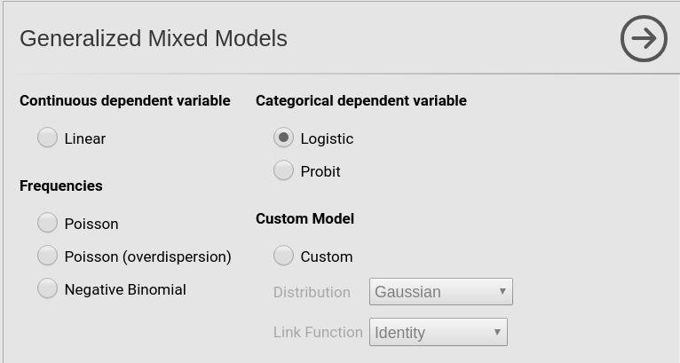
Then we set the variables in the right field depending on their role in the model and their type.

Please note that we put LengthOfStay in covariates
because it is a continuous variable, even though jamovi recognizes it a categorical. By putting it
in Covariates, we implicitly ask the module
to treat it a continuous variable. The opposite holds for
DID (doctors ID) which jamovi
recognizes as continuous but the module treats as categorical after we
put it in the Clusters field.
After the first setup, we need to specify the random effects.
Following the IDRE analysis, we specify the intercept as random
coefficient across doctors (DID).
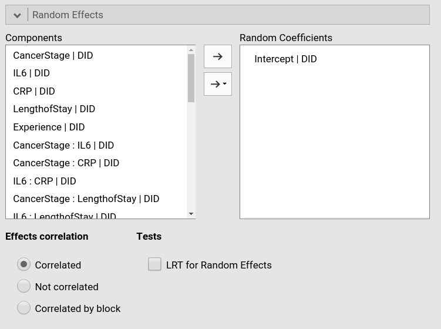
As soon as we include a random effect, the model is estimated
Results
Let’s us first focus on the fixed parameters estimates, the B coefficients.
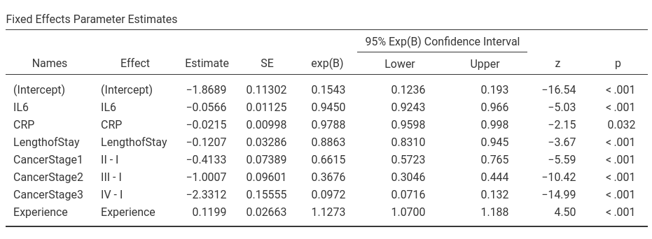
For the predictors coefficients we have substantially the same results as in R, apart from rounding. For the intercept we have different results. The reason is the different default coding of the variables in GAMLj and in R. In R default, factors are coded with the dummy coding scheme, that is
> contrasts(hdp$CancerStage)
II III IV
I 0 0 0
II 1 0 0
III 0 1 0
IV 0 0 1and continuous independent variables are not scaled. In GAMLj the default coding system for categorical variable is `simple.
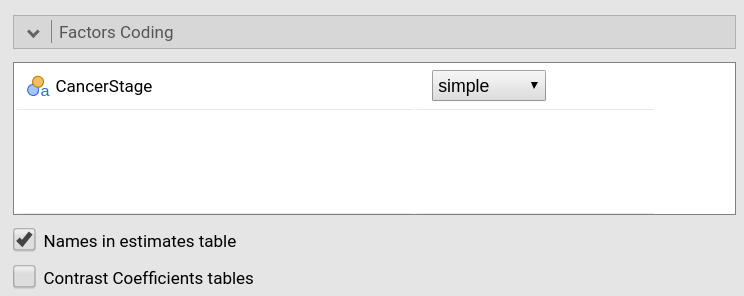
which results in a centered contrast.
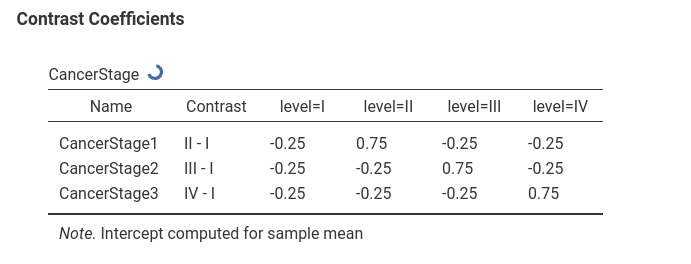
Continuous variables are centered by default.
Thus, in GAMLj the intercept is the expected mean of the (transformed) dependent variable, whereas in R is the expected mean of the (transformed) dependent variable for all continuous independent variables equal to zero and the group scoring all zeros in the categorical variable.
Also the exp(B) and their confidence intervals are equivalent in the two analyses, apart from rounding.
As regards the random coefficients variance, lme4::glmer
produced a SD of 2.01, thus a variance of 4.04, which is
noticeably different from the GAMLj results.
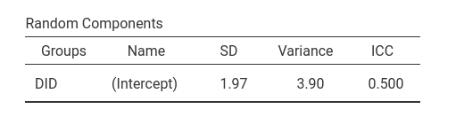
The reason of this difference is in the precision of the estimation.
lme4::glmer estimates the model parameters evaluating the
adaptive Gauss-Hermite approximation to the log-likelihood. How good the
approximation will be is decided by the option nAGQ,
specified in the glmer command above. The higher the
number, the better the approximation, with a penalty in speed. Also
GAMLj lets the user decide the precision level of the estimation with
the equivalent parameter precision/speed in the
Options tab.
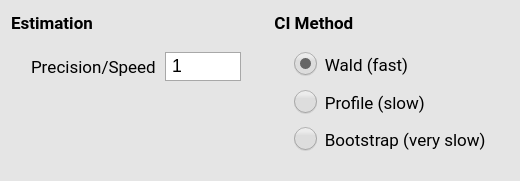
GAMLj default is a value of 1 (fast but not highly precise
estimation). If we set the precision/speed parameter to 10,
we obtain exactly the same results obtained in R. The estimation will
take some time, however.
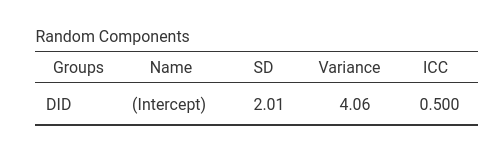
Omnibus tests
The IDRE analysis did not report the omnibus tests. In R, one can
obtain the omnibus tests employing the car::Anova command.
The command lets us specify what Type of analysis to do. We can ask of
the Type III analysis and we get the Chi-square tests.
library(car)
Anova(mod,type=3)
Analysis of Deviance Table (Type III Wald chisquare tests)
Response: remission
Chisq Df Pr(>Chisq)
(Intercept) 14.918 1 0.0001123 ***
IL6 24.293 1 8.273e-07 ***
CRP 4.420 1 0.0355197 *
CancerStage 256.523 3 < 2.2e-16 ***
LengthofStay 12.982 1 0.0003145 ***
Experience 19.135 1 1.218e-05 ***
---
Signif. codes: 0 ‘***’ 0.001 ‘**’ 0.01 ‘*’ 0.05 ‘.’ 0.1 ‘ ’ 1
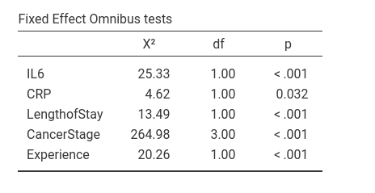
Compared with GAMLj results, there’s substantial agreement even though the figures are not the same, apart from rounding. The reason is that the estimation of the deviance of the model, on which the omnibus tests are based, may be slightly influenced by the scale of the variables. It is well-known that in the general linear model (i.e. regression), the linear coefficients are invariant to linear scaling of the independent variables. That is, if you have centered or not centered the variables, the B’s are the same (when no interaction is present in the model). In generalized mixed models, the scale may slightly influence the estimation, yielding different results for re-scaled variables.
Thus, the small difference in the omnibus tests obtained with R and with GAMLj are due to the fact that in the R analysis the variables are not re-scaled, while in GAMLj they are centered. In fact, if we do not center the variables in GAMLj, results become identical to the R results.
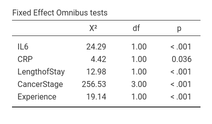
Notice, however, that the conclusions of the analyses are equivalent no matter the scale of the variables.
SPSS
In SPSS we can run a logistic mixed models with
Generalized mixed models menu. However, from within the
Generalized mixed models module one cannot specify whether
a variable is a continuous or categorical one, so we have to define
variables types in the Variable view tab of the SPSS
spreadsheet window.
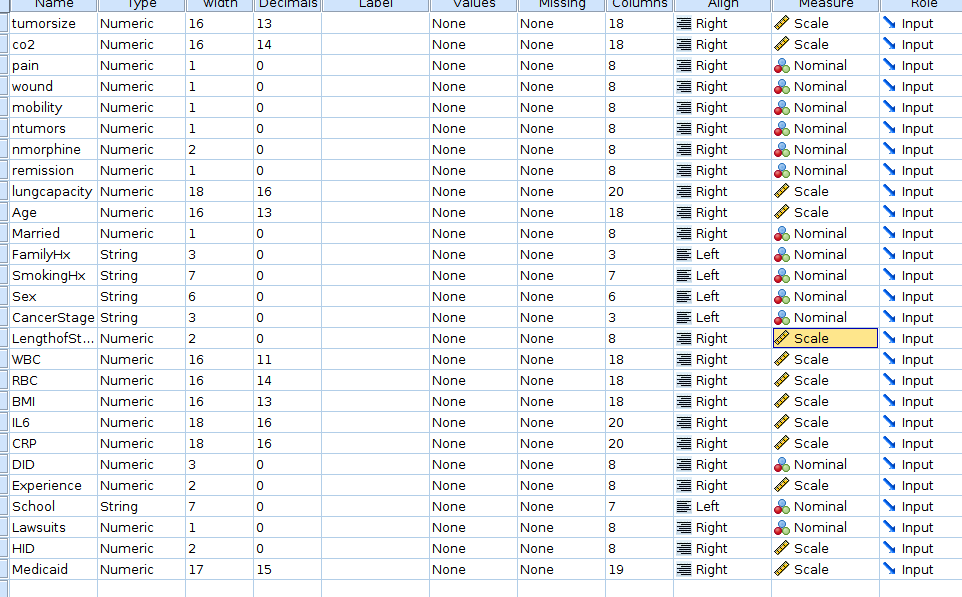
We want to be sure that LengthOfStay, IL6,
CRP and Experience are set as
Scale in the measure column, whereas
DID and CancerStage should be
Nominal.
Then we can go to the mixed models menu.
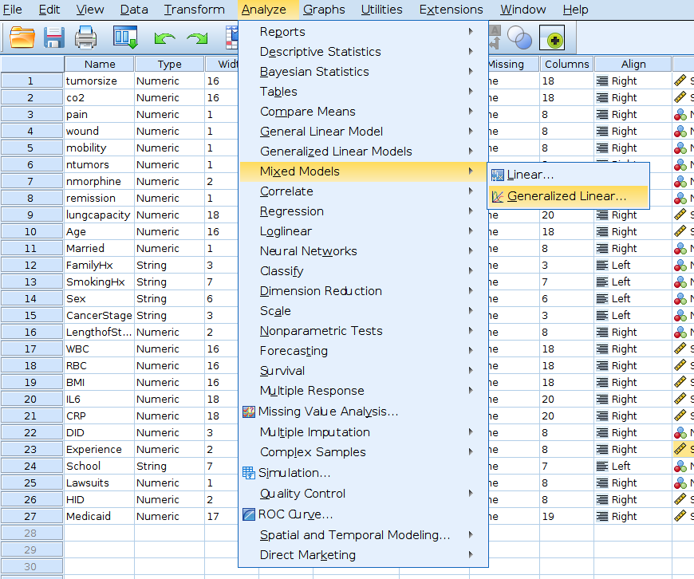
First, we should specify the cluster variable, by dragging
DID into the Subject field, on the right, in
the Canvas panel.
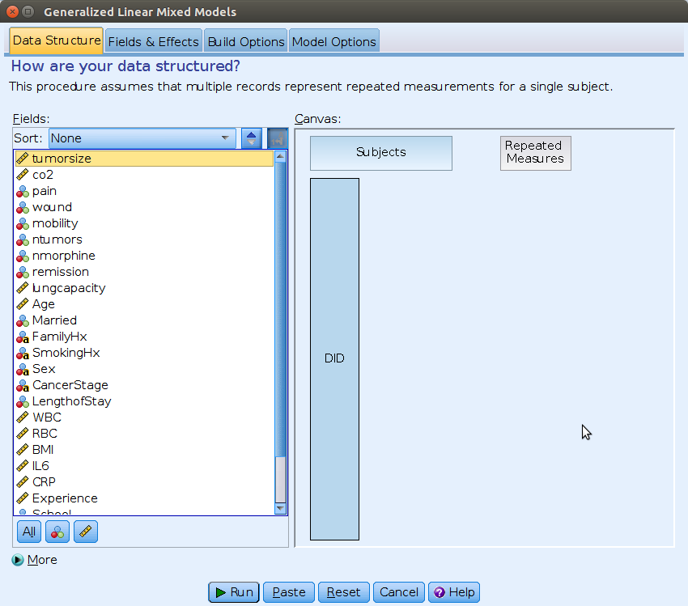
Then we can move to the Fields & Effects tab and
specify the model type (Binary logistic regression) and the
dependent variable (remission).
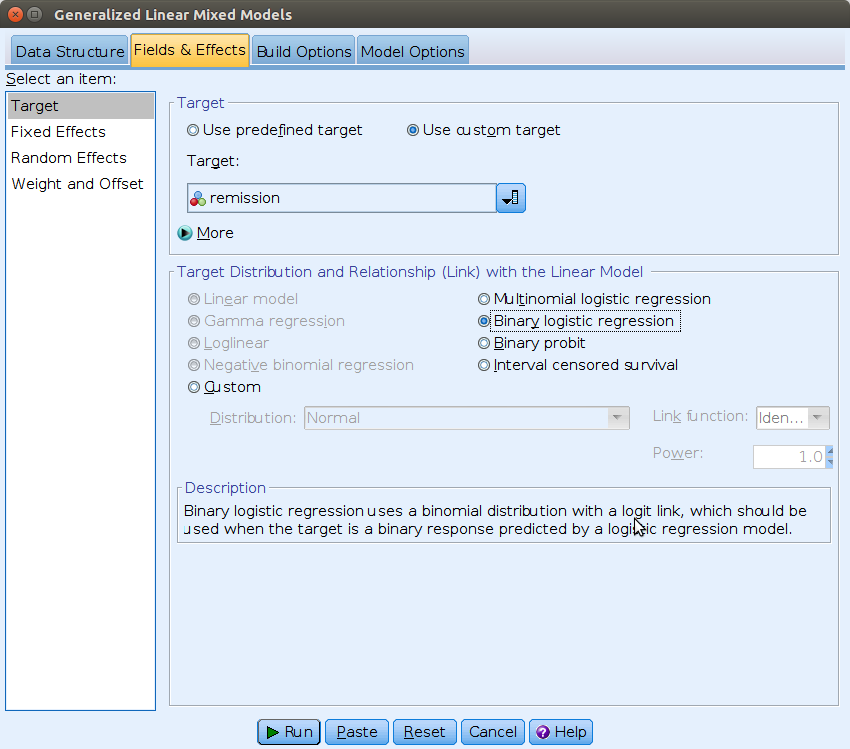
On the Select an item field we can then move to
Fixed Effects, and set the independent variables.
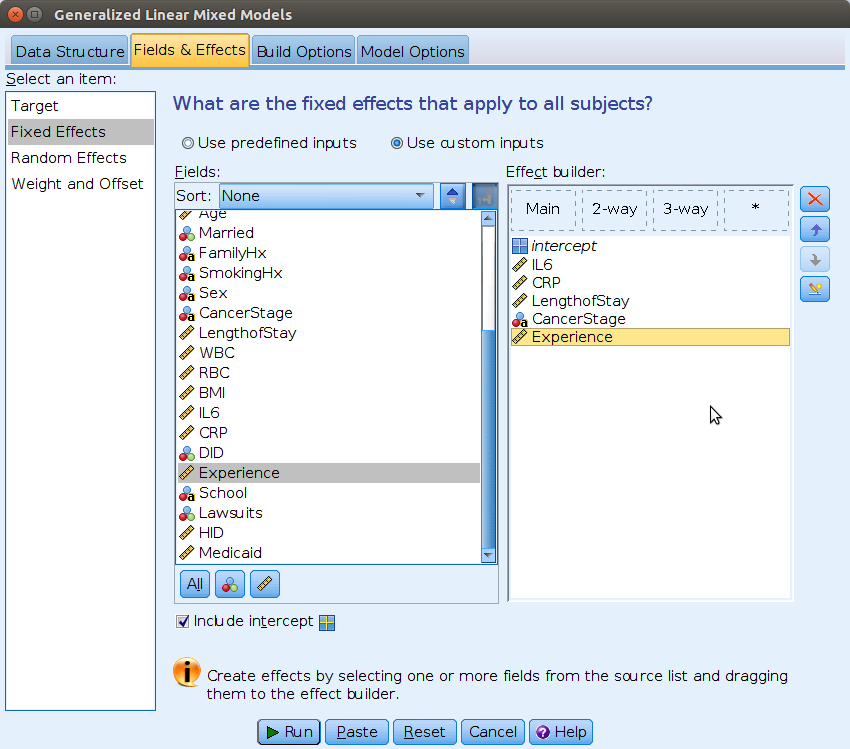
The random intercept can be specified in the
Random Effects tab.
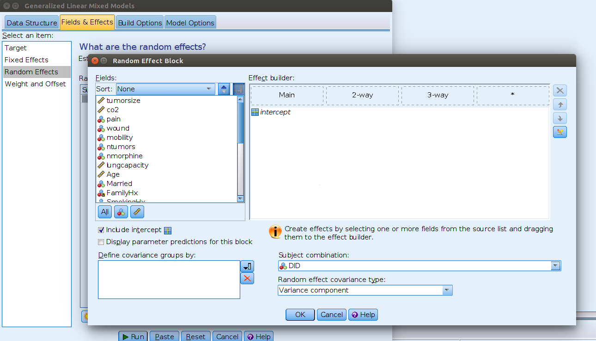
Here we need to flag the Include intercept option and
select DID from the menu Subject combination.
This means allow intercepts to vary across DID.
We can then run the analysis.
Results
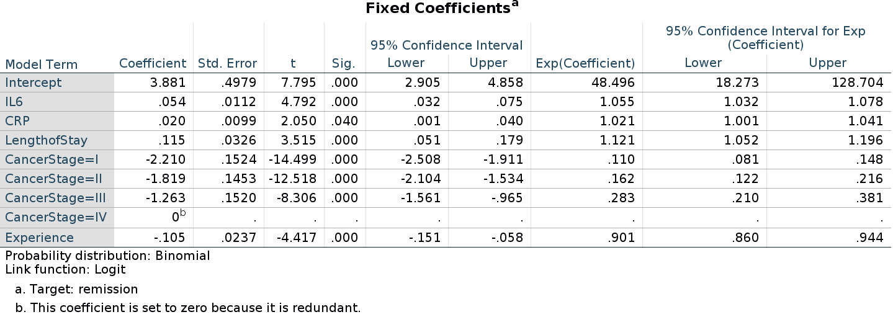
As regards the fixed effects coefficients, we notice that the
continuous predictors show B’s that are equivalent to R and jamovi estimates, but with opposite sign. The
intercept and the categorical predictor are clearly very differ. Those
differences are due to way SPSS picks the reference level of the dummy
coding for categorical variables. In R and jamovi, the reference level is the first level in
the standard ordering of the variable levels (such as the cardinal order
or the alphabetical one). SPSS picks the last group! Thus, here we are
predicting the probability of not remission, that is
remission=0, because SPSS sets remission=1 as
the reference level. That explains the opposite sign. For the
categorical independent variable CancerStage, SPSS picks
the group CancerStage=IV as reference group, whereas GAMLj
and R pick CancerStage=I. That explains the differences in
the parameters.
In SPSS generalized mixed models we can change the reference level in
the Build Options tab, selecting Descending in
the Sorting Order options.
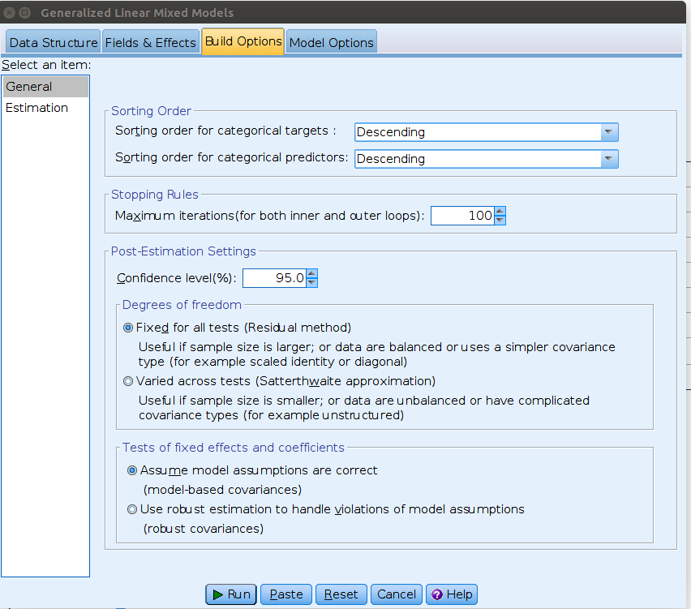
Now the interpretation of the coefficients is equivalent to the one for R and GAMLj estimation, although the numerical estimates are still different in SPSS. Not a big difference, but worth investigating the reason.
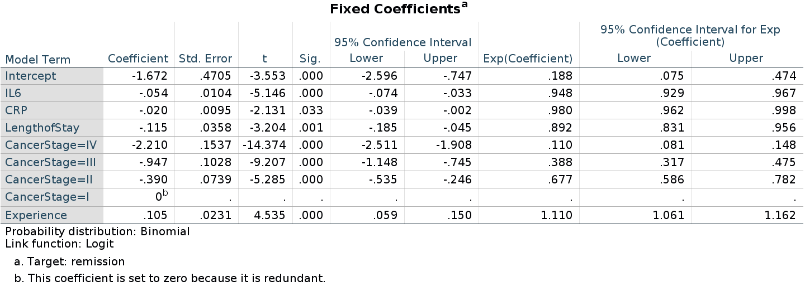
As regards the random coefficients variance, it is quite different from the R or GAMLj results.

Finally, as regards the omnibus tests, SPSS outputs the F-tests, not the Chi-square. Nevertheless, the p-values associated with the tests are in line with the ones obtained in GAMLj and R.
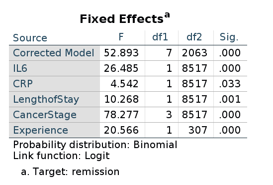
Thus, GAMLj and R lme4::glmer produce results that are
numerically very close and practically identical. SPSS produces results
that are numerically different but substantially equivalent to the other
software results.
Rosetta’s files
- Rosetta store: contrasts
- Rosetta store: Generalized Mixed
- Rosetta store: Nested like in R
- Rosetta store: moderation
Comments?
Got comments, issues or spotted a bug? Please open an issue on GAMLj at github or send me an email